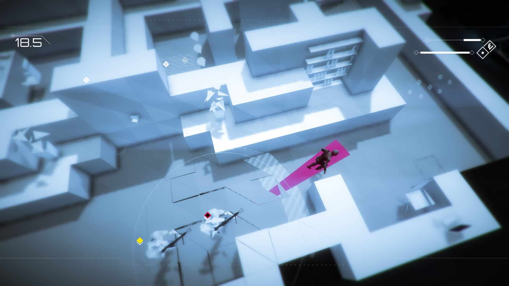
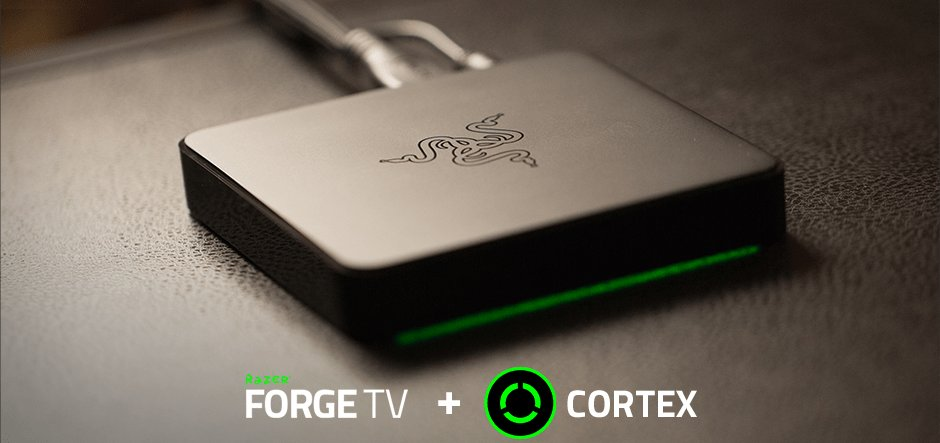
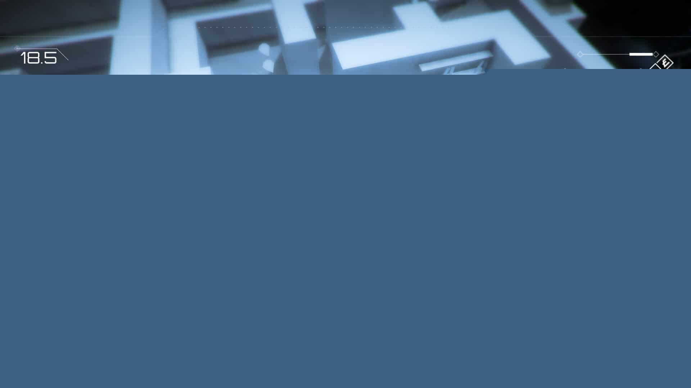

The Hard Truth About Your Creatur.io Runs
Listen up. You think you are good at Creatur.io because you survived your first ten matches. You are not good. You are just lucky. I have over 2000 hours in this game. I have watched thousands of players spawn in, eat a few berries, and immediately get crushed because they refuse to learn the actual mechanics. You treat this game like a mindless eating simulator. It is an evolution simulator. You start as a tiny, pathetic creature. You need to consume berries and orbs to gain XP. You must evolve into a larger predator to survive. If you keep making the same rookie errors, you will stay at the bottom of the food chain forever. Stop whining about the matchmaking and fix your gameplay.

| # | Mistake | Quick Fix |
|---|---|---|
| 1 | Starving Yourself for Early Kills | Stop chasing players until you are actually ready to hunt |
| 2 | Evolving in the Open | Never evolve unless you are completely hidden |
| 3 | Wasting Unique Skills on Trash | Treat your unique skills as high-value tactical assets |
| 4 | Tunnel Visioning on Orbs | Develop strict screen awareness |
| 5 | Overextending as a Top Predator | Control the center of the map |
Starving Yourself for Early Kills
You ignore the basic economy of the early game. You see a smaller opponent and immediately chase them instead of eating the berries and orbs scattered around the map. You think getting an early kill gives you an advantage. It does not. You are a tiny creature. Your damage output is negligible. You waste precious time and energy bouncing off a slightly bigger player while the free XP sits right next to you. You neglect the foundational resources required to actually grow.
This mistake keeps you permanently stuck in the early game tiers. By chasing kills instead of consuming berries and orbs, you starve your XP gain. You fail to evolve. While you are busy harassing players who are slightly bigger than you, the smart players are eating everything in sight. They evolve into larger predators. Suddenly, you are not a hunter anymore. You are prey. You get eaten in a single bite because you refused to do the basic math on XP generation.
Stop chasing players until you are actually ready to hunt. Focus entirely on consuming berries and orbs to gain XP efficiently. Clear out your immediate area. Secure your evolution. Once you evolve into a larger predator, the dynamic shifts entirely. Then, and only then, do you start hunting smaller opponents. Play the resource game first, and the kills will naturally follow as you outgrow the competition.
Evolving in the Open
You hit the required XP threshold and instantly trigger your evolution without checking your surroundings. You see the evolution prompt and mash the button right in the middle of a contested zone. You think becoming a larger predator immediately makes you invincible. You are completely blind to the fact that your evolution transition leaves you vulnerable. You pop into your new form right in front of a player who was already hunting you.
Evolving makes you a larger predator, but it also makes you a massive target. If you evolve in the open, you announce your presence to every larger predator on the screen. They see your size increase. They know exactly what you are doing. They close the distance while you are transitioning. You go from being a tiny, unnoticed creature to a giant, glowing beacon of XP for the top-tier players. You hand them a free meal on a silver platter.
Never evolve unless you are completely hidden. Clear the area of threats before you trigger the change. Hide in low-traffic zones or stay in the outer edges of the map where player traffic is minimal. Secure your perimeter. Once you are safe and your evolution is complete, use your new size and unique skills to dominate the center. Patience during the transition phase separates the veterans from the dead.

Wasting Unique Skills on Trash
You finally evolve and unlock your unique skills, but you immediately spam them on the smallest, weakest opponents you can find. You see a tiny creature and use your special ability just to secure a pathetic kill. You treat your unique skills like basic attacks. You do not respect the tactical advantage these abilities provide. You blow your entire cooldown cycle on prey that would die to a simple basic bite anyway.
Your unique skills are your only real advantage against equal or larger predators. When you waste them on tiny creatures, you leave yourself completely defenseless against the actual threats. A rival predator of your exact size spots you. They engage. You try to use your unique skill, but it is on cooldown. You panic. You try to basic attack, but you are evenly matched. You lose the fight and die because you treated a tactical nuke like a regular handgun.
Treat your unique skills as high-value tactical assets. Only use them when hunting smaller opponents if you need to secure a kill before they escape. Otherwise, save them for equal-sized threats or for escaping larger predators. Manage your cooldowns religiously. When a rival predator approaches, you need your unique skills available to turn the tide of the battle. Discipline with your abilities guarantees your survival in the mid-to-late game.
Tunnel Visioning on Orbs
You lock your eyes on the nearest cluster of XP orbs and completely ignore the rest of the screen. You weave through the map, staring only at the glowing resources. You do not check your minimap. You do not look at the size of the creatures swimming near you. You are so obsessed with consuming orbs to gain XP that you forget to actually play the survival aspect of the game.
Creatur.io is a food chain simulator, not a simple collector game. While you stare at the ground, a larger predator is swimming right at you. You do not see them because you are looking at an orb. They eat you. You lose all your progress, all your XP, and all your hard-earned evolution stages in a single second. Your greed for immediate resources blinds you to the immediate physical threat hovering right above your head.
Develop strict screen awareness. Glance at the orbs, but keep your primary focus on the creatures around you. Check your minimap constantly. Know exactly where the larger predators are before you move to consume berries and orbs. If a bigger player is nearby, do not go for the orb. Reposition. Secure your survival first, and the resources will still be there when the coast is clear.
Overextending as a Top Predator
You reach the top of the food chain. You are a massive predator. You have your unique skills ready. You get incredibly cocky. You chase every single smaller opponent across the entire map. You leave your safe zones. You push deep into enemy territory just to secure one more kill. You think your size makes you invincible, so you abandon all basic survival instincts and play like a mindless brute.
Overextending gets you killed by other maxed-out players who are actually playing smart. When you chase tiny creatures into the deep map, you lose positional advantage. You get cornered by a coordinated group of equal-sized predators. They trap you. They bait your unique skills. They punish your greed. You die not because they were better, but because you walked into a trap chasing a meal that was not even worth the effort.
Control the center of the map. Let the smaller opponents come to you. Do not chase them into dangerous territory. Play defensively and use your massive size to zone out rival predators. Only engage in hunts when you have a clear escape route. Maintain your positional dominance. A smart top predator dictates the flow of the game, rather than blindly chasing every moving target that crosses the screen.

The Bottom Line
Creatur.io punishes greed and rewards discipline. You start as a tiny creature for a reason. You must respect the progression system. Consume your berries and orbs. Gain your XP. Evolve safely. Manage your unique skills like a professional. Stop treating the game like a mindless eating frenzy and start treating it like a strategic evolution simulator. Fix these five fatal mistakes, and you will stop spawning in and dying five minutes later. Now get back in the lobby and prove you actually learned something.